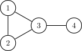

34 \mathbf{NP}-complete problems on graphs
% noend hides “end for”; drop it to keep them
%
The first \mathbf{NP}-complete problems we have seen are about formulas. Many problems on graphs turn out to be just as hard. In this chapter we study two classic examples: finding a large clique, and coloring the vertices of a graph with few colors.
34.1 Encoding of graphs
All graphs in this section are simple and undirected. A graph is a pair G = (V, E), where V = \{1, 2, \dots, n\} and E is a set of edges. Each edge is a set \{u, v\} of two distinct vertices u, v \in V.
We encode a graph by its adjacency matrix, the n \times n matrix A = (a_{uv}) with a_{uv} = \begin{cases} 1 & \text{if } \{u,v\} \in E, \\ 0 & \text{otherwise.} \end{cases} We write A row by row over the alphabet \Sigma_G = \{\textcolor{darkred}{\mathtt{0}}, \textcolor{darkred}{\mathtt{1}}, \textcolor{darkred}{\mathtt{\#}}\}, with a \textcolor{darkred}{\mathtt{\#}} between rows: \langle G \rangle = a_{11} a_{12} \cdots a_{1n}\, \textcolor{darkred}{\mathtt{\#}}\, a_{21} a_{22} \cdots a_{2n}\, \textcolor{darkred}{\mathtt{\#}}\, \cdots\, \textcolor{darkred}{\mathtt{\#}}\, a_{n1} a_{n2} \cdots a_{nn}. A word over \Sigma_G encodes a graph if and only if it consists of n blocks of n bits each, and the matrix they form is symmetric with zeros on the diagonal. This can be checked in polynomial time. The encoding of a graph with n vertices has length n^2 + n - 1.
When a problem also takes a number k as input, we write it in binary after the graph: \langle G, k \rangle = \langle G \rangle\, \textcolor{darkred}{\mathtt{\#\#}}\, \mathrm{bin}(k).
Example 34.1 Let G be the graph with V = \{1,2,3,4\} and E = \{\{1,2\}, \{1,3\}, \{2,3\}, \{3,4\}\}. This is a triangle on 1, 2, 3, together with an extra edge from 3 to 4.

Its adjacency matrix is A = \begin{pmatrix} 0 & 1 & 1 & 0 \\ 1 & 0 & 1 & 0 \\ 1 & 1 & 0 & 1 \\ 0 & 0 & 1 & 0 \end{pmatrix}, so \langle G \rangle = \textcolor{darkred}{\mathtt{0110\#1010\#1101\#0010}} and \langle G, 3 \rangle = \textcolor{darkred}{\mathtt{0110\#1010\#1101\#0010\#\#11}}.
Another natural encoding is the edge list: the number of vertices, followed by the list of edges, each written as a pair of vertices in binary. For sparse graphs, this is shorter than the adjacency matrix. However, we must write the number of vertices n in unary, or list every vertex. Otherwise, a graph with n vertices and no edges would have an encoding of length \mathcal{O}(\log n), while its adjacency matrix has length about n^2, which is exponentially longer.
Exercise 34.1 Show that the two encodings (adjacency matrix and edge list with n written in unary) have polynomially related lengths, and each can be computed from the other in polynomial time. So it doesn’t matter which one we use when we ask whether a graph problem is in \mathbf{P}, in \mathbf{NP}, or \mathbf{NP}-complete.
As with formulas, the number k must be written in binary or another base b \geqslant 2, never in unary, unless we say otherwise. For \mathtt{CLIQUE} and \mathtt{COLORING} this makes no difference, because the only interesting values of k satisfy k \leqslant n. For problems with numbers in the input, such as \mathtt{SUBSET\text{-}SUM}, it matters a lot.
34.2 \mathtt{CLIQUE}
Let G = (V, E) be a graph. A clique in G is a set of vertices K \subseteq V in which every two distinct vertices are joined by an edge: \{u, v\} \in E for all distinct u, v \in K. A clique with k vertices is a k-clique. We define \mathtt{CLIQUE}= \{\, \langle G, k \rangle : G \text{ has a } k\text{-clique} \,\}.
Cliques model groups of objects that are all pairwise compatible, such as people who all know each other in a social network, or tasks that can all be done together.
Example 34.2 Let G be the graph from Example 34.1. The set \{1,2,3\} is a 3-clique, so \langle G, 3 \rangle \in \mathtt{CLIQUE}. The vertex 4 is not adjacent to 1 or 2, so G has no 4-clique and \langle G, 4 \rangle \notin \mathtt{CLIQUE}.
In \mathtt{CLIQUE}, the number k is part of the input, this is important, as the next exercise shows. \mathtt{CLIQUE} is hard only because k can grow with the size of the graph.
Exercise 34.2 Show that for each fixed constant k, the language \{\langle G \rangle : G \text{ has a } k\text{-clique}\} is in \mathbf{P}.
Theorem 34.1 \mathtt{CLIQUE} is \mathbf{NP}-complete.
In the proof of Theorem 34.1 we built a graph from a formula: we constructed small subgraphs, called gadgets, that represent variables and clauses, and connect them so that the formula is satisfiable exactly when the graph has the required property. In the proof of Theorem 34.2 we will do the same, but with a different gadget.
34.3 \mathtt{COLORING}
Let k \geqslant 1. A k-coloring of a graph G = (V, E) is a map c\colon V \to \{1, \dots, k\} such that adjacent vertices get different colors: c(u) \neq c(v) for every edge \{u, v\} \in E. We say G is k-colorable if it has a k-coloring, and for each fixed k we define k\text{-}\mathtt{COLORING} = \{\, \langle G \rangle : G \text{ is } k\text{-colorable} \,\}.
Colorings model conflicts. Take the vertices to be exams, put an edge between two exams that share a student, and take the colors to be time slots. Then a k-coloring is an exam timetable with k slots in which no student has two exams at the same time. Register allocation in compilers and assigning frequencies to radio transmitters lead to the same kind of problem.
Example 34.5 Let G be the graph from Example 34.1. The map c(1) = 1, c(2) = 2, c(3) = 3, c(4) = 1 is a 3-coloring, so \langle G \rangle \in 3\text{-}\mathtt{COLORING}. The vertices of a clique must all get different colors, and the triangle \{1,2,3\} is a clique, so G has no 2-coloring and \langle G \rangle \notin 2\text{-}\mathtt{COLORING}.
The example uses a general fact.
Exercise 34.3 Show that if \langle G,k\rangle\in \mathtt{CLIQUE}, then \langle G\rangle\notin(k-1)\text{-}\mathtt{COLORING}. Show that the converse is false.
The hardness of k\text{-}\mathtt{COLORING} depends on k:
- 1\text{-}\mathtt{COLORING} is trivial: G is 1-colorable if and only if it has no edges.
- 2\text{-}\mathtt{COLORING} \in \mathbf{P}. A graph is 2-colorable if and only if it is bipartite, and this can be checked with a breadth-first search.
- 3\text{-}\mathtt{COLORING} is \mathbf{NP}-complete, and so is k\text{-}\mathtt{COLORING} for every fixed k \geqslant 3.
Theorem 34.2 k\text{-}\mathtt{COLORING} is \mathbf{NP}-complete.
Exercise 34.4 Show that k\text{-}\mathtt{COLORING} is \mathbf{NP}-complete, for every k\geqslant 3.